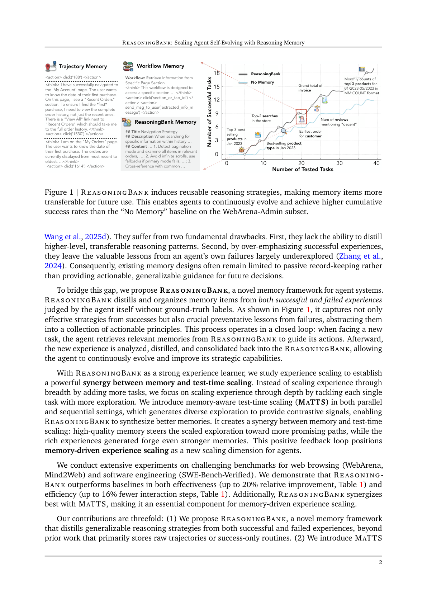
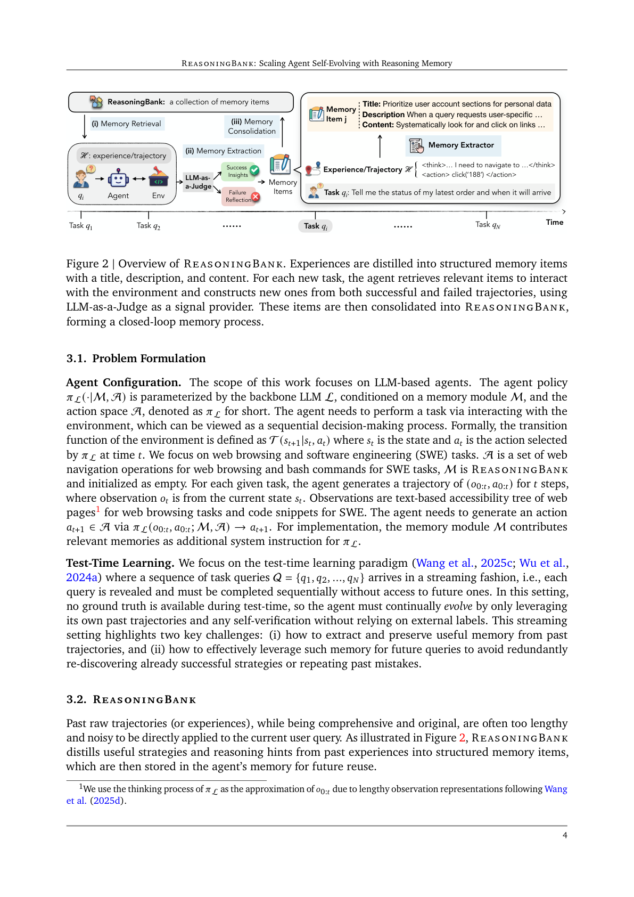
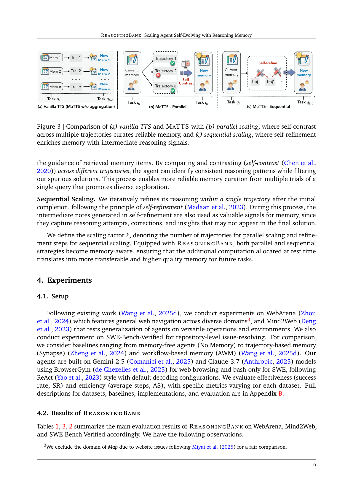
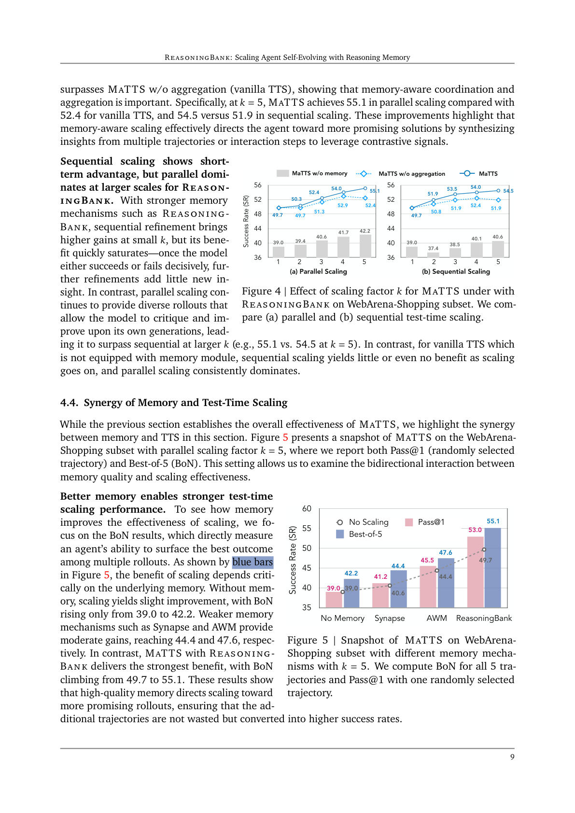
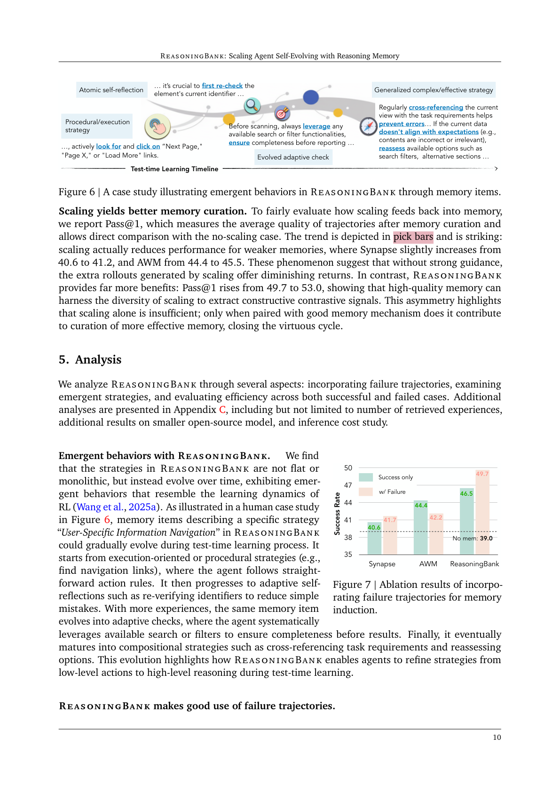
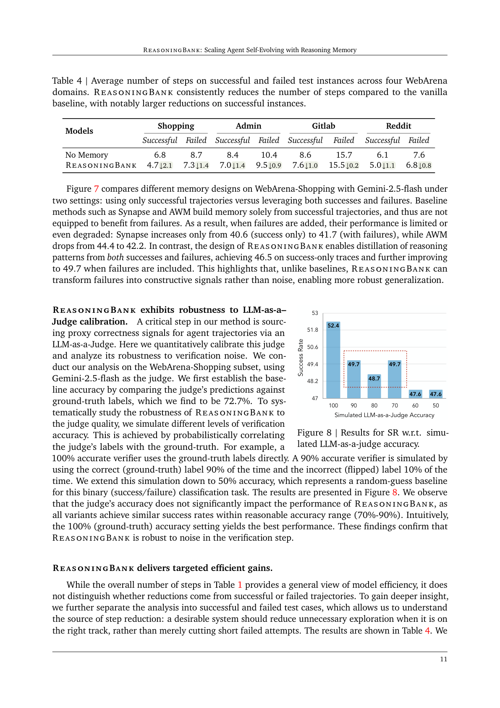

从智能体自我判断的成功与失败经验中提炼可泛化的推理策略，并在测试时引入记忆感知测试时缩放（MaTTS），建立记忆与缩放的双向协同
随着 LLM 智能体在持久现实角色中的采用增多，它们自然会持续遇到任务流。但关键局限是它们无法从累积的交互历史中学习，被迫丢弃宝贵洞见并重复过往错误。我们提出 ReasoningBank——一种新颖记忆框架，从智能体自我判断的成功与失败经验中提炼可泛化的推理策略。测试时，智能体从 ReasoningBank 检索相关记忆以指导交互，并将新学到的内容整合回去，从而随时间变得更强。在此基础上，我们进一步引入记忆感知测试时缩放（MaTTS），通过放大智能体的交互经验来加速并多样化这一学习过程：为每个任务分配更多算力，生成丰富多样的经验，为合成更高质量记忆提供对比信号；更好的记忆反过来引导更有效的缩放，在记忆与测试时缩放间建立强大协同。在网页浏览与软件工程基准上，ReasoningBank 持续优于存储原始轨迹或仅成功流程的现有记忆机制，同时提升效果与效率；MaTTS 进一步放大这些增益。这些发现确立了记忆驱动的经验缩放这一新缩放维度，使智能体能够自我进化并自然涌现新行为。
LLM 的进步加速了交互式智能体的发展，但随其部署于持久、长运行角色，它们持续遇到任务流却基本无法从累积经验中学习——孤立处理每个新任务，导致重复过往错误、丢弃相关洞见、缺乏随时间自我进化能力。近期智能体记忆工作主要聚焦存储过往交互以复用，但常限于利用原始轨迹或成功流程（workflow），存在两大缺陷：无法提炼更高层、可迁移的推理模式；过度强调成功经验，使自身失败的宝贵教训未被探索。因此现有记忆设计多为被动记录，而非为未来决策提供可操作、可泛化的指导。
为此，我们提出 ReasoningBank——从智能体自身判断（无需真值标签）的成功与失败经验中提炼并组织记忆项。如图 1，它既捕获成功中的有效策略，也捕获失败中的关键预防教训，抽象为一组可操作原则，并形成闭环：面对新任务时检索相关记忆指导行动，之后分析、提炼新经验并整合回 ReasoningBank，使智能体持续进化。

以 ReasoningBank 为强经验学习器，我们研究经验缩放以建立记忆与测试时缩放的协同：不是通过增加任务数做「广度」缩放，而是对每个任务用更多探索做「深度」缩放。我们提出并行与串行两种 MaTTS，生成多样探索以提供对比信号，使 ReasoningBank 合成更好记忆——高质量记忆引导缩放探索走向更有希望的路径，丰富经验又锻造更强记忆，形成正向反馈，确立记忆驱动的经验缩放这一新缩放维度。在 WebArena、Mind2Web、SWE-Bench-Verified 上的实验表明，ReasoningBank 在效果（最高相对提升 20%，表 1）与效率（最多少 16% 交互步，表 1）上均优于基线，且与 MaTTS 协同最佳。贡献：(1) ReasoningBank 框架（从成败经验提炼可泛化推理策略）；(2) MaTTS（记忆与测试时缩放的双向协同，新缩放维度）；(3) 广泛实验证明方法及从失败中学习、随时间涌现复杂推理策略的能力。
LLM 智能体记忆： 现有记忆以文本、潜在嵌入、结构化图等形式组织，含检索与管理机制，多用于个性化与长上下文管理；本文属「从过往经验学习作为记忆」一脉，但不同于复用成功轨迹、程序化流程或实例级概念，ReasoningBank 存储高层策略与推理提示，既从成功也从失败学习。智能体测试时缩放（TTS）： TTS 在端到端解题（编码、数学）中有效（best-of-N、beam search、verifier），但在多轮交互/智能体任务中探索不足；现有工作缩放动作搜索空间、智能体数量、环境交互次数，但均未考虑智能体记忆在缩放中的作用。本文提出 MaTTS，实证表明记忆收益超越单纯算力缩放。
智能体配置： 策略 $\pi_L(\cdot|M,A)$ 由骨干 LLM $L$ 参数化，条件为记忆模块 $M$（即 ReasoningBank，初始为空）与动作空间 $A$（网页导航操作或 SWE 的 bash 命令）。环境转移 $T(s_{t+1}|s_t,a_t)$，智能体生成轨迹 $(o_{0:t},a_{0:t})$，观测 $o_t$ 为网页无障碍树或代码片段，经 $\pi_L(o_{0:t},a_{0:t};M,A)\to a_{t+1}$ 生成动作；记忆模块作为附加系统指令提供相关记忆。测试时学习： 任务查询 $Q=\{q_1,\dots,q_N\}$ 以流式到达，须顺序完成且无未来可见、无真值；智能体须仅借自身过往轨迹与自验证持续进化，凸显两大挑战：(i) 从过往轨迹提取并保留有用记忆；(ii) 有效利用记忆避免重蹈覆辙。
原始轨迹虽全面却冗长嘈杂，不宜直接用于当前查询。ReasoningBank 将有用策略与推理提示提炼为结构化记忆项（图 2）。

记忆模式（Schema）： 每个记忆项含三部分——标题（核心策略的简洁标识）、描述（一句话摘要）、内容（提炼的推理步骤/决策依据/操作洞见），兼具人类可读与机器可用。与智能体集成（三步）： (i) 记忆检索——以查询上下文基于嵌入相似度检索 top-$k$ 相关记忆项，注入系统指令；(ii) 记忆提取——任务完成后，用 LLM-as-a-Judge（无真值）给轨迹标成功/失败，成功贡献已验证策略、失败提供反事实信号与陷阱以强化护栏，每轨迹提取多项记忆；(iii) 记忆整合——以简单相加操作将新项并入 ReasoningBank，形成持续进化的仓库。三步构成闭环。
ReasoningBank 使更多经验转化为更大改进。朴素地将 TTS 与 ReasoningBank 结合（图 3a）是次优的——未利用同题冗余探索产生的内在对比信号。为此提出 MaTTS，刻意从缩放中生成的丰富成败轨迹学习以更好策展记忆，含并行与串行两种实例化（图 3b/c）：

并行缩放： 在检索记忆引导下为同查询生成多条轨迹，通过跨轨迹自对比（self-contrast）识别一致推理模式、过滤虚假解，实现更可靠的记忆策展，促进多样探索。串行缩放： 初始完成后在单轨迹内迭代自精炼（self-refinement），中间笔记也作为记忆信号（捕捉尝试、修正与洞见）。定义缩放因子 $k$（并行时为轨迹数、串行时为精炼步数），使额外测试时算力转化为更具迁移性、更高质量的记忆。
在 WebArena（通用网页导航）、Mind2Web（跨任务/网站/域泛化）、SWE-Bench-Verified（仓库级 issue 解决）上实验。对比基线：无记忆（No Memory）、基于轨迹的记忆 Synapse、基于流程的记忆 AWM。智能体基于 Gemini-2.5 与 Claude-3.7，遵循 ReAct 风格。评估效果（成功率 SR）与效率（平均步数 AS）。
表 1/3/2 汇总主要结果。ReasoningBank 在所有数据集、所有骨干上持续优于基线：WebArena 总体 SR 较无记忆分别 +8.3/+7.2/+4.6（三种骨干）；Mind2Web 跨任务/网站/域均清晰增益，跨域（最高泛化要求）增益尤著；SWE-Bench-Verified 上解决率与步数均更优。关键的是，不同于 Synapse/AWM 仅依赖成功轨迹的同质记忆，ReasoningBank 的成败双源提取策略是其持续领先的关键。
ReasoningBank 通过更可迁移记忆增强泛化（Multi 子集跨网站迁移 +4.6），并以过往经验提升效率——WebArena 上平均步数较无记忆最多减 1.4、较其他记忆基线减 1.6；SWE 上分别减 2.8 与 1.3 步。
表 1 显示 MaTTS 在 WebArena 上带来额外性能与效率增益。在 WebArena-Shopping 上深入缩放研究（图 4）：并行与串行缩放均随 $k$ 增大提升 SR；MaTTS 下并行从 49.7(k=1) 升至 55.1(k=5)、串行 49.7→54.5，而「MaTTS w/o memory」增益更小且不稳。MaTTS 持续优于朴素 TTS（vanilla）：k=5 时并行 55.1 vs 52.4、串行 54.5 vs 51.9，证明记忆感知协调与聚合的重要性。

串行缩放在小 $k$ 有短期优势但易饱和（模型一旦明确成败，再精炼增益小）；并行缩放在大 $k$ 持续提供多样 rollout 供自我批评而占优（如 k=5 时 55.1 vs 54.5）。无记忆的朴素 TTS 中串行几乎无益、并行始终主导。
图 5 以 $k=5$ 并行展示协同（BoN 与 Pass@1）。更好记忆带来更强缩放： 无记忆时 BoN 仅从 39.0→42.2；Synapse/AWM 中等增益（44.4/47.6）；ReasoningBank 的 MaTTS 最强（49.7→55.1）。缩放带来更好记忆策展： 以 Pass@1 衡量记忆策展后轨迹平均质量，弱记忆下缩放反而微降（Synapse 40.6→41.2、AWM 44.4→45.5），ReasoningBank 则 Pass@1 从 49.7→53.0——高质量记忆能利用缩放多样性提取建设性对比信号，闭合良性循环。

涌现行为： 图 6 案例显示，ReasoningBank 中某「用户特定信息导航」策略随时间从执行导向/程序策略（找导航链接）→ 自适应自反思（复核标识减错）→ 自适应检查（用搜索/过滤器确保完整）→ 组合策略（交叉参照任务需求并重新评估选项），体现从低层动作到高层推理的进化，类似 RL 学习动力学。
善用失败轨迹： 图 7 在 WebArena-Shopping 上对比仅用成功 vs. 成败皆用。Synapse/AWM 仅由成功构建记忆，加入失败后性能受限甚至下降（AWM 44.4→42.2）；ReasoningBank 因能从成败双源提炼，仅成功 46.5、加入失败 49.7，将失败转为建设性信号而非噪声。

对 LLM-as-a-Judge 校准的鲁棒性： 图 8 模拟不同验证准确率（50%–100%）下 SR。在合理范围（70%–90%）内各变体 SR 相近，100%（真值）最佳，证明 ReasoningBank 对验证噪声稳健。
我们提出 ReasoningBank——一个从成败经验中提炼策略级推理信号并整合进测试时缩放（MaTTS）的记忆框架。广泛实验表明其在提升性能的同时减少冗余探索；进一步的记忆与缩放协同显示 ReasoningBank 引导缩放走向更有希望的 rollout，而多样 rollout 以宝贵对比信号丰富记忆。我们也分析了各组件与涌现行为，为构建自适应、终身学习的智能体提供了可行路径。